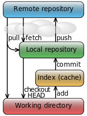

版本控制工具
1 GIT
Linus:
I'm an egotistical bastard, and I name all my projects after myself. First Linux, now git.
- 一图胜千言:
- 
Git 是一个版本控制工具，它能实现团队中的代码协作开发，在代码同步和管理方面功能强大、理念先进。
Git 是当下最流行的分布式版本控制工具，轻量级，但功能强大，由 linux 之父 linus 开发。它的使用特别广泛，尤其开源社区基本都用它作为版本控制工具。我们每个人也要尽量掌握它。
而网站 github.com 是基于 git 工具的一个代码托管网站，目前基本所有知名的开源项目都选择把代码部署到这个网站。这里的代码包罗万象，是个学习的天堂。实属居家旅行、杀人拿塔的必备网站。
我们自己的 github 主页是 github.com/13431 大家可以直接用浏览器访问。 如果想用 git 工具下载同步代码，方法如下：
# 1. 进入 git bash，切换到相应目录，比如，e 盘下的 course 目录： cd /e/course/ # 2. 如果是第一次下载，执行以下命令 git clone https://github.com/13431/notes.git # 3. 如果不是第一次下载，只是更新代码，执行以下命令。 # ps. 要经常运行这个命令，保持与服务器的同步 cd /e/course/notes/ git pull
这是 Git 的一个教程，大家有时间可以按照上面的看看、练练，以后务必掌握基本用法： Git 廖雪峰 教程
下面总结了一下常用的基本命令：
## 修改 .gitconfig 文件，这是 git 的配置文件 vi ~/.gitconfig ## 初始化 版本库 git init git init-db ## 添加忽略文件。这个文件控制，哪些文件不要被提交 echo "*.svn" > .gitignore ## 将改变增加至索引 git add . ## 从索引写入到库 git commit -m "提交到版本库" git commit -a -m "提交，连同所有未 add 的修改文件" git commit --amend -a -m "替换最后一次的提交信息" ## 查看修改了什么东西 git diff git diff --cached git status ## 回撤版本，重新提交。后悔药。 git reset HEAD^ # 回撤到上一版本，默认是 --mix 形式，另有 --soft 和 --hard 形式 git status # 可以看到，上一版本提交的文件没有增加到 index 的状态 git add/commit... # 做完处理后，重新提交 ## 查看日志，历史记录 git show git log git log --pretty=oneline # 定制 log 的显示样式 git log -2 -p # 显示最近两次提交的详细信息 git log --stat --summary # 简要显示每次更新的统计信息（提交过那些文件，有多少行修改） git log --graph --pretty=format:'%Cred%h%Creset -%C(yellow)%d%Creset %s %Cgreen(%cr) %C(bold blue)<%an>%Creset' --abbrev-commit ## 增加/查看/切换/删除 分支 git branch # 查看分支 git branch 13431 # 创建分支 13431 git branch 13431 343223 # 以 343223 为起点创建 13431 分支 git checkout 13431 # 切换到分支 13431 git checkout -b tmp # 创建并切换到分支 tmp git branch -D tmp # 删除分支 tmp ## 合并工作到主分支(13431 -> master) git checkout master # 切换到主分支 git merge HEAD 13431 # 将 13431 的最新版本合并到当前分支 git pull . 13431 # 相当于 git fetch && git merge ## 生成并应用补丁，这是另外一个合并工作的方法。暂时不需要搞太清楚。 git format-patch master > A.patch git checkout master # 先生成补丁文件，再切换到分支目录 git apply A.patch # 应用补丁文件到当前分支 git add/commit... # 然后提交修改 ## 下载/上传/更新 信息到指定版本库 git clone git://192.168.1.1/repo.git git push git://192.168.1.1/repo.git 13431:master git pull git://192.168.1.1/repo.git master:13431 git fetch public ## 其他命令： git tag # 将某个版本做个标记，即赋予一个好记的名字 git gc # 垃圾收集，能大大减小版本库大小 git repack # 同上，也能大大减小版本库大小 git ls-tree HEAD # 查看版本库中的文件结构，下面语句是跟 awk 合作，打印整个目录结构 git ls-tree -r HEAD | awk '{print $4}' > d:/home/index/repTree git whatchanged # 显示某个版本改变了哪些文件 git show-branch # 显示分支变动情况 git reflog # 显示所有变更历史(跟 git log 不同) git clone # 相当于 git init && git fetch git pull # 相当于 git fetch && git merge git rebase # git merge 外，合并仓库的另一种形式 ## 下面的例子是建立一个纯仓库，并作为开发的中心仓库（即 GIT 服务端） git clone --bare /workspace/hnpmi /repo/13431.git # 创建一个新的纯仓库，用于备份、共享 cd /workspace/13431 # 这是我们的工作目录 git remote add origin /repo/13431.git # 将刚才新建的仓库添加为我们的远程分支 git push origin master # 本地的 master 分支有更新，同步到远程分支
2 Subversion
首先，下载可爱的小乌龟:
wget https://nchc.dl.sourceforge.net/project/tortoisesvn/1.9.5/Application/TortoiseSVN-1.9.5.27581-x64-svn-1.9.5.msi
其次，如果想使用 svn 从服务器上下载东西:
svn checkout http://svn.apache.org/repos/asf/struts/struts2 svn co http://svn.apache.org/repos/asf/struts/struts2
如果想同步代码:
svn update
查看当前代码的修改情况：
svn status svn st
如果想提交代码:
svn commit -m 我的注释 svn ci -m "My Message"
查看日志
svn log
寻求帮助
svn --help svn update --help
2.1 搭建服务器
首先，创建一个 svn 库:
svnadmin create /var/svn/aaa
修改下面的 conf/svnserver.conf 文件，将下面几条注释去掉
anon-access = read # 匿名用户只能读，不能改 anon-access = write # 已登录用户，可以修改 password-db = passwd # 指明验证文件的名字
其次，开启服务：
svnserve --daemon --root /tmp/bbb
然后，就可以访问了
svn co svn://ip
导入文件夹到项目，可以用 import 命令：
svn import ~/hello svn://ip/hello